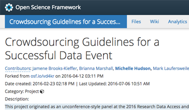
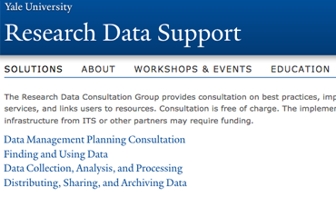
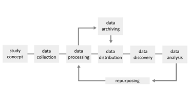

Manage or Muerte workshop series
Manage or Muerte is a series of topic-specific entry-level workshops on managing research data in a new era of public access requirements and scholarly imperatives. Content is available to the Yale community.
This website serves as a simple portal to my recent projects. Get in touch if you have questions or ideas.
Manage or Muerte is a series of topic-specific entry-level workshops on managing research data in a new era of public access requirements and scholarly imperatives. Content is available to the Yale community.

Crowdsourced guidelines for how librarians can put on effective data-related events at their institutions, hosted on the Open Science Framework and presented at the 2016 Research Data Access and Preservation Summit.
Day of Data brings together scholars from across academia, government, and industry to discuss the research data landscape at Yale and beyond. Videos of previous presentations are available on the conference website.

Yale's Research Data Consultation Group is a university-wide group that provides consultation on best practices, implements data management services, and links users to resources for assistance at any point in the data lifecycle.
Using Open Refine to clean and join data about horror films held in the Yale University Library VHS collection. An online accompaniment to a Halloween-themed data workshop hosted at Yale for several years.
Using Open Refine to clean and explore data within a dataset of 500,000 songs. An online accompaniment to a Halloween-themed data workshop hosted at Yale for several years.
Using Open Refine to clean, join, and explore data about witch trials in the US, Europe, and England. An online accompaniment to a Halloween-themed data workshop hosted at Yale for several years.

A project using LaTeX, markdown, GitHub, and other tools to create reusable components for research data management education at Yale. (Current through Fall 2016 and not being updated further.)